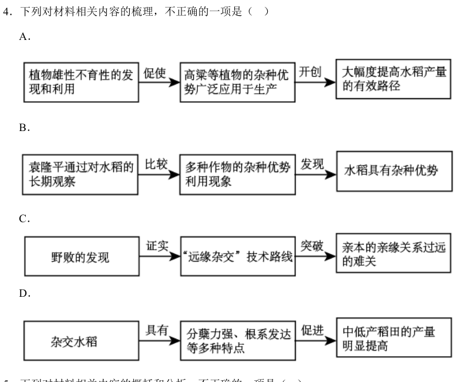

真题 · 非连续文本阅读
杂交水稻培育
据三则材料辨析杂种优势的研究路径、三系法的关键条件及推广效果。
导读
文体与题材：科技研究与农业技术史的组合材料，讨论杂种优势、三系法杂交水稻及其推广。
作者与出处：材料分别摘编自袁隆平《杂交水稻培育的实践和理论》、雷毅《科学研究中的创造性思维与方法——以袁隆平“三系”法杂交水稻为例》、李晏军《中国杂交水稻技术发展研究（1964～2010）》。
内容脉络：材料一交代植物雄性不育性的利用与水稻增产的研究背景；材料二追述袁隆平质疑旧认识、确立三系法和远缘杂交路线的过程；材料三说明新型种植模式与中低产稻田增产的后续效果。
主旨：杂交水稻研究通过观察、比较和试验发现水稻的杂种优势，远缘杂交与野败材料推动三系法育种，并在农业生产中产生显著作用。
阅读重点：按时间和因果方向排列研究环节；区分既有作物经验、杂交水稻研究成果及推广后的效果。
原文
原文按结构分节；随文内容可定位至对应段落。
材料二：长期观察、比较和远缘杂交推动三系法育种。
遗传育种学界对水稻这一严格自花授粉作物具有杂种优势现象普遍持否定或怀疑态度，袁隆平根据自己对水稻的长期观察，经过与玉米等作物杂种优势利用现象的比较后，对水稻无杂种优势的观念提出了质疑。袁隆平于1964年正式开始水稻杂种优势利用的探索，两年后终于发现水稻具有杂种优势。根据高粱、玉米杂种优势利用的成功经验，他将这种杂交思路用于水稻物种上，由此提出了“三系法”籼稻杂交路线。所谓三系杂交水稻是指雄性不育系、保持系和恢复系三系配套育种。不育系为生产大量杂交种子提供了可能性，借助保持系来繁殖不育系，用恢复系给不育系授粉来生产育性恢复且有优势的杂交稻。从“三系法”的操作程序上讲，成功的关键首先是要找到合适的不育系材料。在认真总结多年来的研究工作的基础上，袁隆平终于认识到，后代不育性状的不理想是亲本的亲缘关系太近造成的。后代产生变异的可能性与亲本的亲缘关系呈正相关，即亲本的亲缘关系越远，后代产生变异的可能性就越大，不育性状就越明显。于是一切都变得清晰了：下一步的工作即是寻找地理远缘或遗传远缘的稻株，而在这些稻株中，野生稻或野生稻中的不育株作为亲本则是最为理想的，它极有可能突破此前不育系选育的难关。“远缘杂交”技术路线的确立，是袁隆平“三系法”杂交水稻迈向成功的关键性一步。随着雄性不育野生稻（野败）在海南的发现，“远缘杂交”的技术路线得到证明，它不仅正确而且完全可以实现。
（摘编自雷毅《科学研究中的创造性思维与方法——以袁隆平“三系”法杂交水稻为例》）
材料三：新品种组合带来种植模式变化与中低产田增产。
由于杂交水稻不同熟期组合的出现，全国各地涌现出各种与杂交水稻种植相配套的新型种植模式。湖南、浙江、广东、广西、江苏、湖北等省区以种植杂交水稻为主，发展麦类与一季杂交稻、双季杂交稻、玉米与杂交稻等多种模式。这些新型模式不仅提高了土地复种指数，促进了粮食、食用油和多种经济作物的经营发展，而且培育了地力，提高了土地经济效益与生态效益。推广杂交水稻，还促使中低产稻田的面貌发生根本性变化，同时改变了农民对中低产稻田的种植评估观念。杂交水稻分蘖力强，根系发达，吸收力好，秆粗叶茂，株型好，光能转化效率高，这使中低产稻田能够获得较高的产量，与高产稻田产量的差距大大缩小。
（摘编自李晏军《中国杂交水稻技术发展研究（1964～2010）》）
第1题 · 关系梳理
下列对材料相关内容的梳理，不正确的一项是（3分）
A．植物雄性不育性的发现和利用→促使高粱等植物的杂种优势广泛用于生产→开创大幅度提高水稻产量的有效路径。
B．袁隆平通过对水稻的长期观察→比较多种作物的杂种优势利用现象→发现水稻具有杂种优势。
C．野败的发现→证实“远缘杂交”技术路线→突破亲本的亲缘关系过远的难关。
D．杂交水稻→具有分蘖力强、根系发达等特点→促进中低产稻田的产量明显提高。

参考答案1展开 / 收起
参考作答
C。
文本分析
A项查看证据 ↗
正确。材料一先说明雄性不育性使其他作物的杂种优势获得生产应用，再说明杂交水稻为增产开辟途径。两事先后相接，但不要误认前者为杂交水稻研究成功后才出现的结果。
B项查看证据 ↗
正确。材料二按长期观察、与其他作物比较、质疑旧认识、研究后发现杂种优势的次序叙述。
C项查看证据 ↗
错误。野败的发现证实了远缘杂交路线；此前的难点是亲本亲缘关系太近，使后代不育性状不理想。图解末端将“太近”改为“过远”，方向相反。
D项查看证据 ↗
正确。材料三明确列举分蘖力强、根系发达等性状，继而指出这些性状使中低产田达到较高产量。
知识点
第2题 · 内容辨析
下列对材料相关内容的概括和分析，不正确的一项是（3分）
A．袁隆平在进行杂种优势利用的探索实践时，并没有盲从学界的权威理论，而是将杂交水稻作为自己研究的突破口。
B．不育系材料的选育是三系配套育种技术能否实现的关键，理清这一研究思路后，袁隆平开始了寻找地理远缘或遗传远缘稻株的工作。
C．亲本的亲缘关系越近，后代的不育性状就越不理想，这是袁隆平在认真总结多年研究工作的基础上才认识到的。
D．杂交水稻的推广正好与全国各地涌现出的新型种植模式相配套，这些新型模式不仅提升了土地的复种指数，还培育了地力。
参考答案2展开 / 收起
参考作答
D。
文本分析
A项查看证据 ↗
正确。学界普遍怀疑水稻具有杂种优势；袁隆平以长期观察和跨作物比较提出质疑并开展试验，体现没有盲从既有判断。
B项查看证据 ↗
正确。材料二明言三系法先要找到适宜不育系，研究者据亲缘远近的认识转而寻找地理或遗传远缘稻株。
C项查看证据 ↗
正确。材料二以“亲缘关系太近”解释后代不育性状不理想，并将这一认识置于多年研究总结之后。
D项查看证据 ↗
错误。原文说明杂交水稻不同熟期组合的出现促成各地与杂交水稻种植相配套的新模式。选项把“相配套”的对象改成杂交水稻的推广，省去熟期组合这一发生条件；后半句关于复种指数与培育地力则符合原文。
知识点
第3题 · 研究意义
杂交水稻培育的成功有什么意义？请根据材料进行概括。（6分）
参考答案3展开 / 收起
参考作答
- 育种研究：证实水稻具有杂种优势，确立三系配套与远缘杂交的技术方向，为利用杂种优势培育水稻提供可行路径。
- 粮食生产：为大幅度提高水稻产量开辟途径，使中低产稻田取得较高产量，缩小其与高产稻田的产量差距。
- 种植与土地利用：不同熟期组合带来相配套的多样种植模式，提高复种指数，推动多种作物生产，并改善地力、经济效益和生态效益。
文本分析
研究层面查看证据 ↗
材料二从学界质疑水稻杂种优势写起，以试验发现、三系法和远缘杂交路线交代技术突破。概括意义时应把“已有的其他作物经验”与“水稻育种研究的成果”分开。
产量层面查看证据 ↗
材料一明确写“大幅度提高水稻产量”，材料三进一步落实到中低产稻田的增产和高、低产田差距的缩小。
农业经营层面查看证据 ↗
材料三按“熟期组合出现→模式涌现→复种与地力效益”陈述推广效果，答案可按这一顺序整合，避免反置原因与结果。
易误辨析
高粱、向日葵、甜菜等作物利用雄性不育性的事实，是材料一交代的既有研究背景；它们的应用不能归入杂交水稻培育成功后的成果。
参考文献
2022年普通高等学校招生全国统一考试语文全国甲卷，第4—6题；袁隆平、雷毅、李晏军的三则摘编材料，篇名见导读。